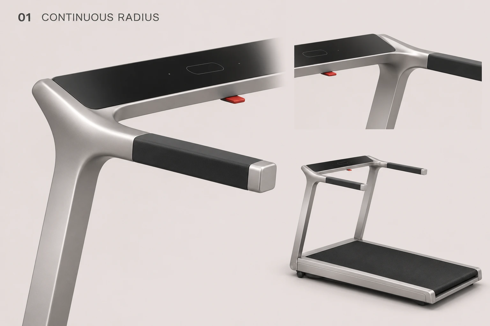
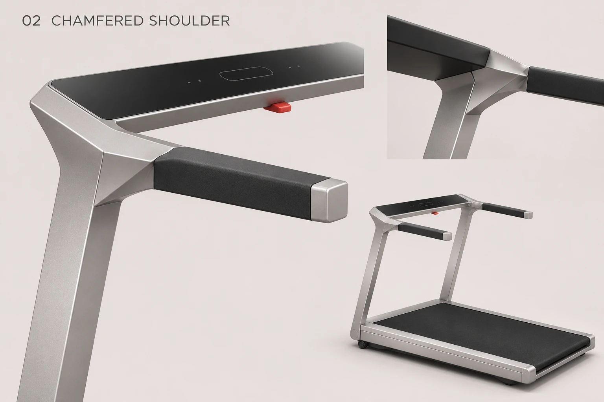
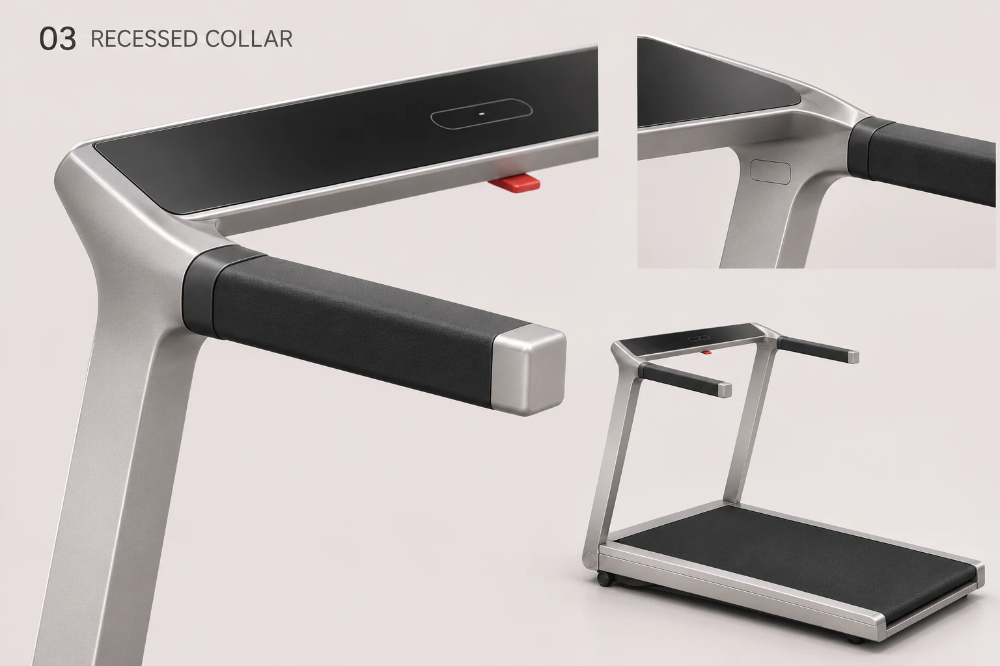
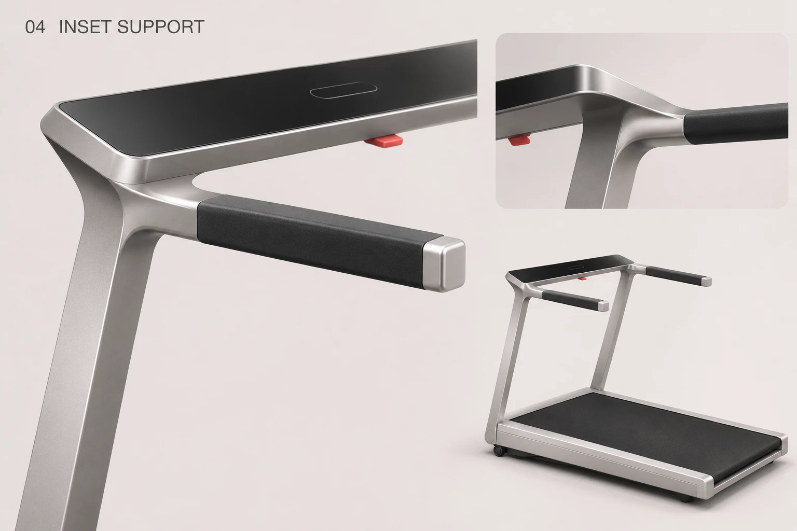

凌序 · 上端接头的四种处理
依据本轮圈注原图，聚焦斜立柱、控制台与直扶手的三向交汇。每张保留局部近景、另一角度和整机位置；点击图片放大。
01 · 一体圆角
连续曲面连接立柱、控制台与扶手根部，视觉更柔和。

02 · 折面肩部
以平面和斜切面收拢三向交汇，更贴近凌序的直线语言。

03 · 分件包覆
用黑色短套环与内侧小盖明确部件交界。

04 · 内收支撑
支撑向内收，让控制台外缘下形成浅凹位与阴影。
